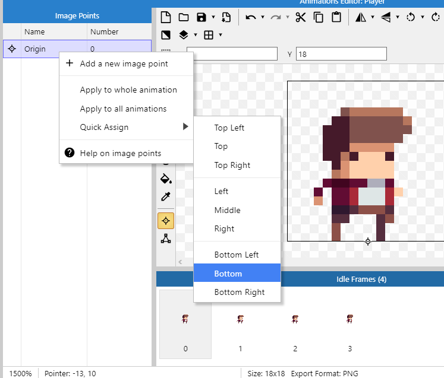
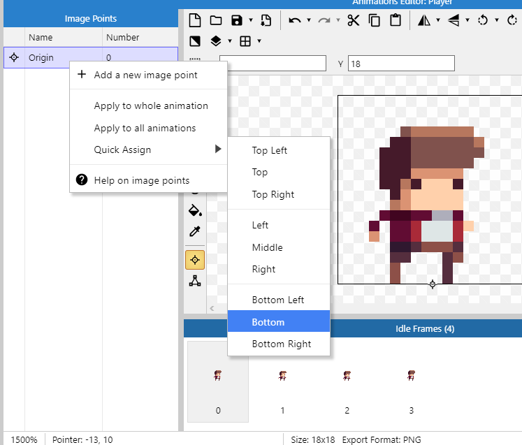
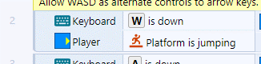

Aula 2 - Personagem, programação e plataformas
Aula 2 - Personagem, programação e plataformasAdicionando o personagemBox collisionMudando as propriedades do PlayerAdicionando animaçõesEditando a Collision BoxMudando a origemAdicionando partículasAba Event SheetTipos de eventosEvento do tipo AND / EEvento do tipo OR / OUInvertElse (Senão)SubeventosComeçando a programaçãoFazendo o player pararFazendo o player olhar para a direção corretaPulando, caindo e poeiraComo o Construct executa a event sheet?Câmera
Adicionando o personagem
Abra a janela de criação de objetos e escolha um do tipo Sprite

Abra o gerenciador de arquivos e escolha a imagem Player\Decomposed\Idle\tile000.png ( ). Na pasta você verá que existem outros arquivos para fazer a animação de quando o personagem está parado, faremos a animação mais adiante.
). Na pasta você verá que existem outros arquivos para fazer a animação de quando o personagem está parado, faremos a animação mais adiante.

Clique na tela para adicioná-lo
Se você apertar o botão de executar verá que o jogador está flutuando


Isso acontece pois esse é um objeto do tipo Sprite, que não tem um comportamento definido, precisamos dar a ele o comportamento de plataforma


Se você apertar o botão para executar agora verá que o player irá atravessar o chão e cair para o infinito, isso acontece já que precisamos dar ao chão algum comportamento que permita a interação com o jogador
Use o menu lateral para selecionar o Tilemap e entre no menu Add behavior, antes disso, aproveite para renomear os objetos para o que eles irão representar no jogo

Aplique o comportamento Solid
Agora o jogador e o cenário podem interagir um com o outro, mas você perceberá que existem vários problemas
- Em alguns lugares o jogador atravessa o chão ou fica flutuando em cima dele
- O jogador está muito rápido e pula muito alto (até sai da tela)
- Não existe animação de andar, pular ou olha para o lado certo

Vamos resolver esses problemas
Box collision
Para determinar se um objeto está encostando em outro usamos um conceito chamado Box collision ou Collision Polygon, como seria muito complexo para o computador usar as imagens que colocamos para determinar se dois objetos estão se tocando, ele desenha um polígono em cima desses desenhos para simplificar esse teste
No caso do chão, o construct colocou um quadrado como polígono, sendo que algumas formas são triangulares
Procure os tiles que não completam o quadrado completamente e dê um clique duplo em um deles

Clique no ícone da ferramenta de editar o polígono de colisão
Você pode arrastar os quadrados vermelhos para mudar a forma do polígono. Dê um duplo clique em um deles para gerar mais um e clique uma vez e aperte Delete ou Backspace para removê-lo
Faça esse processo para todos os tiles que não forem quadrados completos. Precisamos repetir o mesmo processo para o sprite do jogador
Agora se você executar o jogo vai ver que a interação entre o personagem e o mapa está muito melhor
Mudando as propriedades do Player
Aqui estão alguns valores recomendados, você pode escolher os que quiser para seu jogo, mas é importante escolher com sabedoria já que você pode precisar reconstruir o cenário todo caso mude a forma como o jogador se move.
Note também que existe uma barra na parte inferior que diz o que o campo selecionado faz.
Adicionando animações
Dê um clique duplo no personagem. Note que há uma barra lateral indicando quais animações o personagem tem e uma outra na parte inferior mostrando os frames da animação corrente.
Vamos começar com a animação de quando o jogador está parado, mude o nome da única animação existente para idle
Na área dos frames escolha a opção Import Frames > From Files para dizer que iremos importar os frames da animação cada um de um arquivo

Selecione os arquivos em Tiles\Player\Decomposed\Idle e delete o quadro de número zero já que ele é o que estava anteriormente
Você pode usar a opção Preview para ver como a animação está

Como você pode ver, a animação acontece apenas uma vez e está muito lenta, vamos alterar isso.
Com a animação Idle selecionada, vamos definir a velocidade como 8 frames por segundo e vamos marcar a opção de loop

O mesmo processo deve ser aplicado para as animações

Idle
- Speed: 8
- Loop: sim
Shoot
- Speed: 20
- Loop: não
Jump
- Speed: 5
- Loop: não
Fall
- Speed: 5
- Loop: não
Run
- Speed: 14
- Loop: sim
Editando a Collision Box
Como adicionamos mais animações precisamos definir as caixas de colisão para elas, dessa vez faremos um trabalho mais preciso.
Segurando a tecla ctrl clique nos dois quadrados vermelhos acima do personagem, você vai selecionar ambos e eles ficarão amarelos, use a seta para baixo para mover a linha até a cabeça do personagem
 Repita o processo para os outros lados desta forma:
Repita o processo para os outros lados desta forma:
 Agora clique no personagem com o botão esquerdo do mouse e escolha a opção
Agora clique no personagem com o botão esquerdo do mouse e escolha a opção Apply to all animations

Agora todas as animações usarão esse mesmo polígono
Mudando a origem
Para garantir que todos os frames fiquem alinhados e para fazer o efeito de poeira saindo dos pés do personagem (que faremos logo a seguir) precisamos mudar a origem da imagem. O ponto de origem é o ponto utilizado para alinhar os frames de uma animação, vamos colocá-lo nos pés do personagem.
 

Use a opção para colocar o ponto de origem na parte de baixo da imagem

Agora aplique essa mudança para todas as animações
Adicionando partículas
Vamos colocar um efeito de poeira quando o jogador cair no chão, para começar, adicione um novo objeto do tipo Particles

Clique na tela para adicionar o objeto, na janela que irá abrir selecione o arquivo Particles/playerdust.png
É importante que esse objeto esteja no jogo mas não esteja visível , ou seja, ele deve estar fora do layout, quando precisarmos dele faremos que apareça nos pés do jogador.
Renomeie o objeto para podermos programar com ele mais facilmente mais tarde


Use a opção Z Order > Send to top of layer para traze o objeto para o topo da camada fazendo com que efeito apareça na frente do personagem
Defina as propriedades conforme a seguinte imagem

Aba Event Sheet
Nesta aba é onde ficará o código que definirá os comportamentos do jogo por meio de eventos
Um evento é uma condição ligada a um ou mais objetos do jogo, por exemplo: no game, o teclado será representado por um objeto do tipo Keyboard, pois são os objetos que podem lançar eventos, assim, podemos no código monitorar por algum evento específico, nesse caso, pode ser quando alguma tecla for pressionada ou solta, então podemos executar alguma ação quando esse evento ocorrer.


Alguns eventos comuns são:
Quando algum objeto do jogo está tocando outro
- Inimigo tocou no jogador: tirar pontos de vida do jogador
- Jogador tocou em uma moeda: faça a moeda sumir e adicione na pontuação do jogador
Quando o jogador está andando, pulando ou parado
- Mude para a animação correspondente
Lembre-se:
- Um evento é qualquer acontecimento dentro do jogo
- Posso criar um código que é ativado quando um evento ocorrer
- Posso decidir quais ações devem acontecer quando esse evento for acionado
Você pode criar um evento clicando em Add event

Será te perguntado a condição, ela tem que estar relacionada a um dos objetos do jogo
Uma lista de eventos daquele objeto aparecerá, você pode escolher qual deles você quer monitorar
Existem dois tipos de eventos
Eventos que não começam com
On- As ações serão executadas enquanto a condição for verdadeira
- Se a ação for fazer o personagem pular, ele irá pular repetidamente até você soltar a tecla
Eventos que começam com
On- As ações são executadas na primeira vez que a ação for verdadeira, ou seja, apenas no instante que o evento ocorrer
- Se a ação for fazer o personagem pular, ele irá pular uma vez e só pulará novamente se você soltar a tecla e apertá-la novamente


Tipos de eventos
Evento do tipo AND / E
Você pode precisar que mais de um evento esteja acontecendo ao mesmo tempo para executar algum bloco. Quando existe mais de uma condição e precisamos que todas sejam verdadeiras, usamos o AND
Inserindo uma nova condição

Outra forma de fazer isso

Um bloco do tipo AND fica dessa forma

Evento do tipo OR / OU
Num evento do tipo OR , o bloco é executado quando uma ou mais condições são verdadeiras.
Para fazer um bloco OR você precisa começar por um do tipo AND e usar a opção Make OR block

Ele ficará assim:

Você pode torná-lo um bloco AND usando a seguinte opção:
Invert
Caso você queira que o bloco seja executado quando uma condição não for verdadeira, use a opção invert

Um bloco com um invert fica assim:
Perceba que na imagem existe uma junção do bloco AND com o invert nesse caso, você pode ler essa condição como:
*"Execute as ações a seguir **se** A tecla W do teclado estiver sendo apertada E o player Não estiver pulando"*

Else (Senão)
Um bloco do tipo else é executado quando o que foi testado em um evento não ocorreu: você pode fazer o teste de algo e o seu inverso em um mesmo bloco.
Um bloco else é criado dessa forma:

O resultado será:

Você pode ler o else como: Execute essa ação se algo acontecer, caso contrário execute outra ação

Subeventos
Subeventos são maneiras de condesar o código e evitar repetição. imagine que você tem que programar o seguinte:
Se o jogador encostar numa alavanca um som deve ser tocado, se ele apertar a tecla x a alavanca deve mudar de posição
Sem o uso de sub eventos a solução poderia ser assim:
SE (jogador está encostando na alavanca):toque o somSE (jogador está encostado na alavanca E a tecla x está sendo apertada):mude a posição da alavanca
Veja que uma das condições se repete, podemos condensar isso usando um subevento da seguinte forma:
xxxxxxxxxxSE (jogador está encostando na alavanca):toque o somSE (tecla x está sendo apertada):mude a posição da alavanca
Para criar um subevento use:
Começando a programação
Primeiramente, vamos criar um grupo para conter os movimentos do jogador, isso será importante pois precisaremos desativar todos os movimentos na hora do jogador atirar a flecha


Como vamos adicionar os eventos ao grupo Player Movement, precisamos usar a opção Add event to 'Player Movement'
Selecione o Player, a condição vai ser baseada nele

Vamos começar criando o bloco onde a animação do jogador correndo será ativada quando ele estiver se movendo e estiver no chão, assim a animação de correndo não acontecerá quando o jogador estiver pulando


Se você executar o jogo agora vai ver que o jogador passa para a animação de correr quando as teclas direcionais são apertadas, mas não volta para a animação de parado. Isso não foi programado ainda...
Dica: agora é uma boa hora para rever a velocidade máxima que o player pode chegar e a velocidade da animação dele correndo para que os dois fiquem em sincronia.
Fazendo o player parar
Fazendo o player olhar para a direção correta

Se você não tem o Objeto Keyboard adicionado ao projeto, adicione-o
Crie um novo evento partindo do objeto teclado e escolha o evento On key pressed e aperte a seta para a esquerda para definir que queremos que código seja executado quando a tecla para a esquerda for pressionada


Pulando, caindo e poeira


Como o Construct executa a event sheet?
É preciso lembrar que, no Construct, todas as ações programadas precisam ser precedidas por um evento, pode-se dizer que, quando algo acontece no jogo um evento é disparado no código e ações são tomadas.
Mas como o jogo sabe que alguma ação aconteceu no jogo?
É simples, você pode enxergar a event sheet como uma lista de condições, o construct percorre todas elas em loop, testando se alguma condição é verdadeira se for, as ações associadas a essa condição são executadas.
O tempo para percorrer todo o código é chamado de tick, é um conceito parecido com o FPS (frames per second) de um jogo ou vídeo, onde um frame representa uma das foto instantânea em cada momento do jogo, então, mais FPS representam mais fotos por segundo, da mesma forma, em um computador mais rápido, o código é executado em menos tempo e o tempo entre um tick e outro é menor então em poucos segundos cabem mais ticks.
Câmera
Nossa câmera será representada por um objeto do tipo Sprite, precisamos:
- Criar um novo sprite
- Pintá-lo de uma cor para que possamos vê-lo durante a programação
- Mudar seu nome para
Camera - Marcar em suas propriedades que quando o jogo iniciar deve ser invisível
- Fazer a programação associada


Vamos adicionar um evento do tipo System > Every tick fora do grupo Player Movement


Para suavizar o movimento da câmera vamos usar a função lerp, ela causará um atraso no movimento da câmera num fator de 0.03 ao ir da posição x,y de onde está (Self) até a posição x,y do jogador (Player)

Uma função na programação funciona de maneira muito parecida com uma função na matemática, uma função é algo que:
Tem um nome e recebe um valor de entrada como:
Faz algum cálculo baseado em uma fórmula:
E retorna algum valor como saída

Uma forma mais simples de fazer a câmera (mas não tão boa):